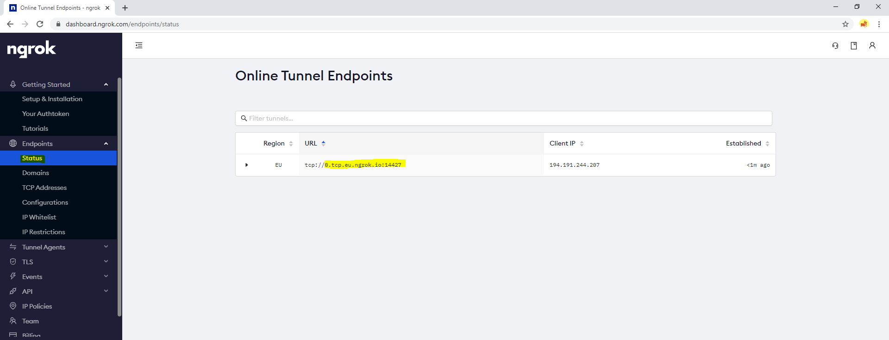
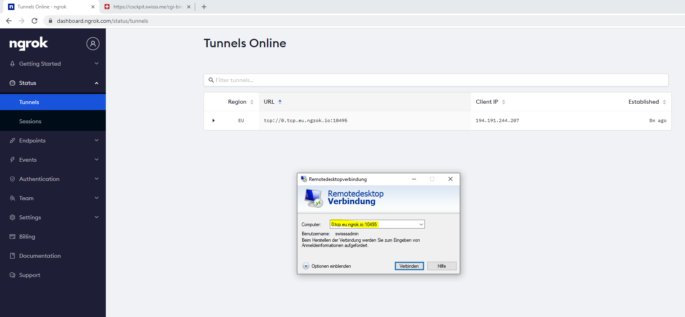
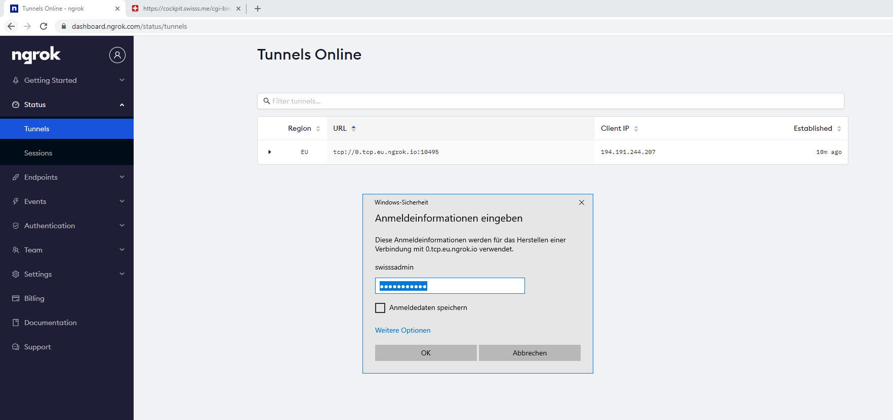
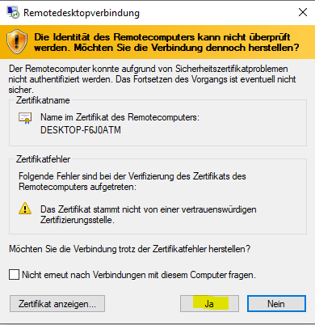
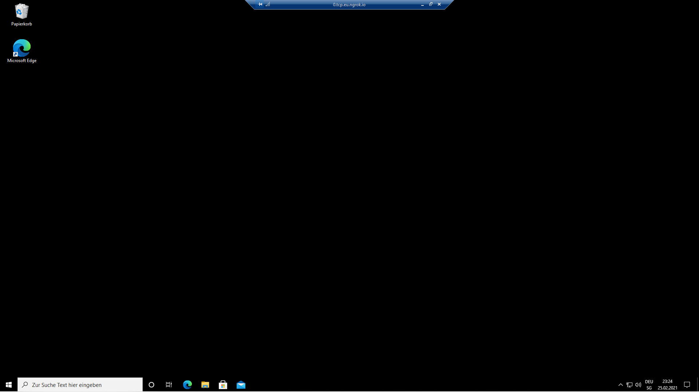

Wenn du eingeloggt bis kannst du deinen Token sehen (Hier gelb markiert), dieser musst du dir Notieren, da du in später brauchst.
Als nächstes öffnest du das Swisss Customer Portal unter https://cockpit.swisss.me. Hier loggst du dich mit dem Benutzer und Passwort ein, welches du beim Kauf erhalten hast.
Bist du eingeloggt klickst du auf Create new VM.
Nun fügst du deinen Token ein, wählst dein Betriebssystem aus (Du kannst nur eine Windows VM erstellen wenn du VPS Plan 2 oder höher besitzt!) und erstellst die VM mit Create VM. Die Hardwareeinstellungen werden dann nach deinem VPS Plan angepasst und die VM erstellt. Hier noch ein paar Anmerkungen: - Du kannst nur einen VM auf einmal besitzen - Du kannst nur dein Betriebssystem auswählen welches du auch im Abo hast - Du musst den richtigen Token angeben sonst musst du die VM wieder löschen und dann neu aufsetzen.
Jetzt wird deine VM erstellt. ACHTUNG! Die Seite ladet solange bis die VM erstellt und fertig konfiguriert ist. Dies kann bis zu 10 Minuten dauern. Brichst du die Seite ab während dem Erstellungsvorgang brichst du ein teil der Installation ab und kannst danach nicht auf deine VM zugreifen.
Ist die Seite fertig geladen wird dir mitgeteilt ob das erstellen erfolgreich war. Wenn bei ""errors":[]" nichts in den Klammern steht hat alles funktioniert. Ausserdem bekommst du am Schluss die Bestätigungsnachricht. Nun kann es noch einige Sekunden bis Minuten dauern bis deine VM gestartet ist, aber du kannst trotzdem schon weitermachen.
! ACHTUNG: Nach dem kreieren der VM kann es sein, dass sie nicht automatisch gestartet werden kann, starte die VM also sicherheitshalber nochmals manuell über das cockpit nachdem du sie erstellt hast.

Nun wechselst du wieder zurück zu ngrok.io und navigierst zur "Tunnels" Section.

Nun wechselst du wieder zurück zu ngrok.io und navigierst zur "Tunnels" Section.

Der Standard Benutzer und Passwort sind: swisssadmin / swisssadmin. Das Passwort solltest du nach dem ersten Login unbedingt ändern!

Hier musst du Ja drücken, sonst kannst du dich nicht mit deiner VM verbinden.

Hast du alles richtig gemacht siehst du nun den Desktop deines VPS. Gratulation du hast nun deinen eigenen Virtual Private Server deployed! Nun kannst du deine Services einrichten und den Server über cockpit.swisss.me verwalten. Für weitere Anleitungen wie zum Beispiel das Portfeigeben für deine Webservices findest du ebenfalls in dieser Dokumentation.